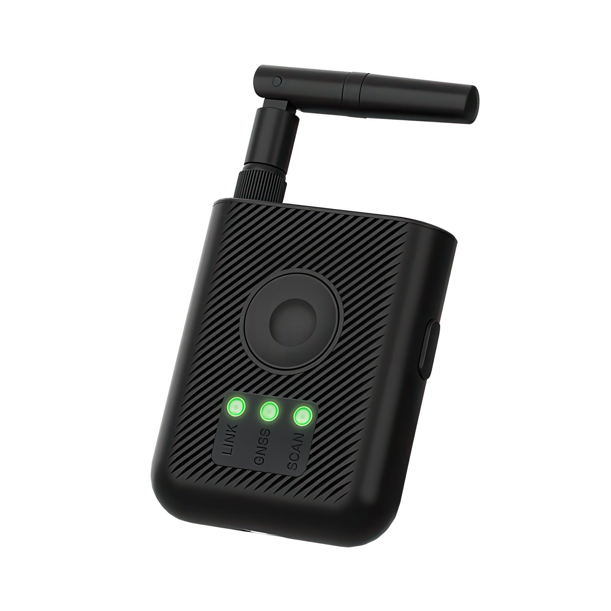
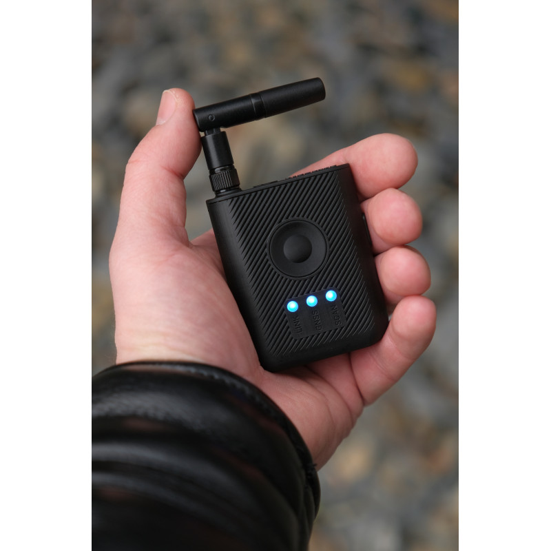
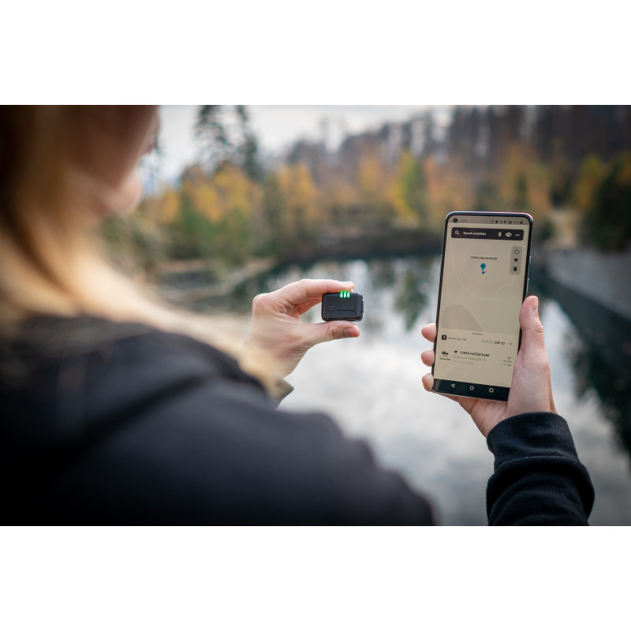

Home / Detection & Field Gear / Portable Remote ID Detector
Detection & Field Gear · Detector
$1,799 ships from us after payment
Hardware Only ships from US shops after payment. Ready-to-Run ships from us after we load the image. Sold by Dark Sky Systems LLC. Card via Stripe.
A portable Remote ID detector. Pocket receiver for broadcast Remote ID — about three miles of airspace receive when you walk the site.
| What it is | Dronetag RIDER portable Remote ID receiver |
|---|---|
| Receive | ASTM F3411-22A / ASD-STAN EN 4709-002 broadcast Remote ID — 2.4 GHz Bluetooth and 2.4 GHz Wi-Fi |
| Range | About 3 miles (5 km) with the included antenna. Terrain and 2.4 GHz noise cut that. Optional high-gain antennas are not in this SKU |
| Alerts | Built-in buzzer and LINK / GNSS / SCAN LEDs |
| Position | On-board GNSS (GPS L1, GLONASS L1, Galileo E1, BeiDou B1, SBAS) so the unit knows where it is |
| Data out | Bluetooth, USB-C, and integrated LTE. Offline mode needs no subscription |
| Power | Built-in Li-Po 3.7 V 1000 mAh. USB-C 5 V charge. About 6–10 h. No spare pack |
| Housing | IP54. −20 °C to +60 °C. 134 × 53 × 20 mm with antenna; 66 × 53 × 20 mm folded. 64 g |
| Connector | SMA for the 2.4 GHz receive antenna |
No. Receive only. It listens for broadcast Remote ID. It does not jam, spoof, or send a command.
About 3 miles on broadcast Remote ID with the included antenna. Buildings, terrain, and a crowded 2.4 GHz band cut that. Aircraft that do not broadcast Remote ID are invisible to it.
No. A built-in Li-Po ships inside the unit. This SKU does not include a spare pack.
No for live receive. Bluetooth or USB-C to the free scanner app works without a plan. A two-month Connect trial for LTE / cloud ships with the unit. After that, stay offline for free or buy Connect from the maker. We sell the hardware.
No. Fusion Sensor is the $2,000 / $4,500 flashed kit. RIDER is a pocket receiver with its own app. Receive only.
When the aircraft sends a pilot location in the Remote ID message, yes — it maps that point. If the pilot location is not sent, you get the aircraft and, often, the takeoff point. That is the broadcast. We do not invent a location.